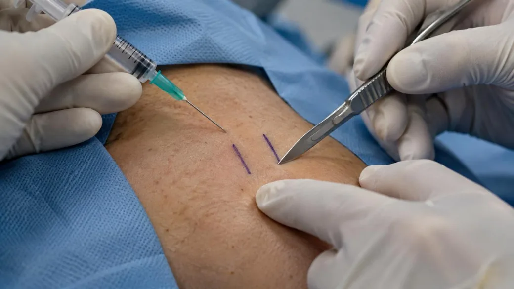
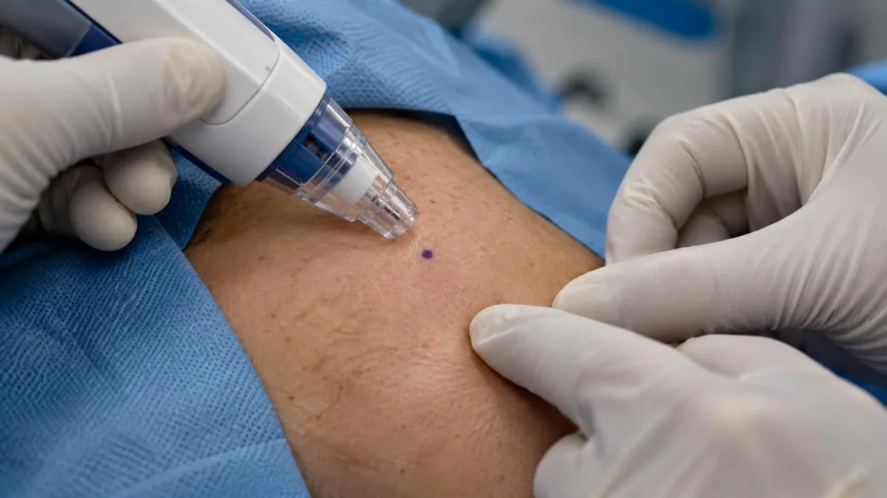
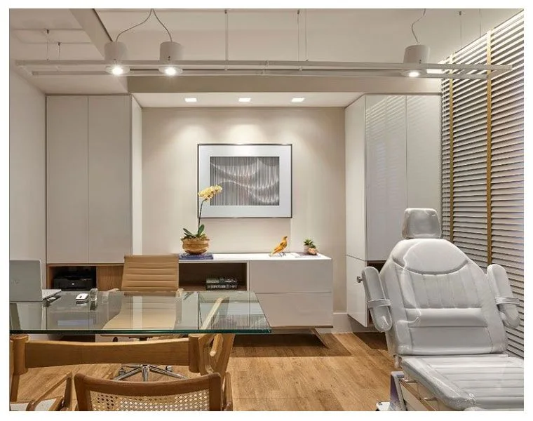

Anestesia sem agulha
Aplicada por pressão na pele, sem picada. Você fica acordado e confortável.
Procedimento em [X] minutos, sem corte e sem agulha. Você resolve num dia só — avaliação, procedimento e acompanhamento até o exame de controle.
Atendimento particular. Os valores e formas de pagamento são informados no contato.
Em vez de duas incisões com bisturi, é feita uma única punção milimétrica. A anestesia é aplicada por jato de pressão, sem agulha.

Duas incisões com bisturi, anestesia por agulha

Punção única, anestesia por jato de pressão
Aplicada por pressão na pele, sem picada. Você fica acordado e confortável.
Uma abertura milimétrica dá acesso aos canais. Sem bisturi.
Curativo simples e você volta pra casa no mesmo dia, com orientações.
Do começo ao fim.
[15 a 20] minutos, ambulatorial.
Estrutura completa, sem hospital.
Retorno às atividades em poucos dias.
Retorno + espermograma inclusos.
Atendimento discreto, sem exposição.
Lei 14.443/2022 — orientamos todo o processo.
A vasectomia vai afetar minha ereção ou meu desempenho?
Não.
A vasectomia interrompe apenas o transporte dos espermatozoides. Libido, ereção, orgasmo e ejaculação continuam exatamente os mesmos. A testosterona não muda — a única diferença é a capacidade de gerar filhos.
Pela Lei 14.443/2022: homens maiores de 21 anos, ou com pelo menos 2 filhos vivos. Há prazo mínimo de 60 dias entre a manifestação de vontade e o procedimento. Não é mais necessário o consentimento do cônjuge — a decisão é sua.
A anestesia é aplicada por jato de pressão, sem agulha. Durante o procedimento você fica acordado e confortável. Depois, é comum um desconforto leve por alguns dias, controlado com analgésico simples.
Existe cirurgia de reversão, mas ela é mais complexa, mais cara e não tem garantia de sucesso. A orientação é decidir pela vasectomia como método definitivo.
Não é imediato. Ainda restam espermatozoides nos canais depois do procedimento, então é necessário manter outro método até o espermograma de controle confirmar a ausência.
É um dos métodos contraceptivos mais eficazes que existem. A falha é rara — e o espermograma de controle existe justamente para confirmar o resultado no seu caso, sem depender de estatística.
O atendimento é particular. Os valores e as formas de pagamento são informados no contato, antes do agendamento.
CRM-[UF] [número] · RQE [número] — Urologia
Urologista com foco em andrologia e cirurgia minimamente invasiva. Título de especialista pela Sociedade Brasileira de Urologia (SBU).
★★★★★Cheguei tenso e saí surpreso. Não senti dor e foi tudo muito rápido. Atendimento super discreto.
— Paciente, 38 anos
★★★★★Marquei e resolvi na semana seguinte. Explicaram cada etapa e não teve nenhuma surpresa. Recomendo.
— Paciente, 41 anos
★★★★★Equipe explicou cada etapa e me senti seguro com o acompanhamento até o exame de controle.
— Paciente, 35 anos
Depoimentos com identidade preservada, sobre o atendimento, sem prometer resultado.
Você sabe exatamente o que faz parte do atendimento.
Atendimento particular. Os valores e formas de pagamento são informados no contato, conforme o seu caso.
Fale com nossa equipe pelo WhatsApp e agende sua avaliação. Tire todas as dúvidas antes de decidir.
[Nome da clínica]
[endereço completo]
WhatsApp: [número]
Telefone: [número]
[dias e horários]

"O que todo homem precisa saber antes da vasectomia."